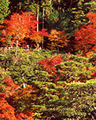
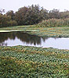
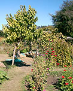
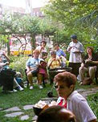
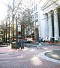

|
 |
 |
生态临界点
故事：按区域分类
故事：按题材分类
短片
成功案例

人类生态学：
生态临界点的原理
浏览百个生态转折点成功故事



保护国家森林
日本

人造湿地
美国阿卡达

可食用的学校庭院
美国伯克利

社区花园
纽约****

波特兰：宜居城市
美国
* 7分钟视频 | ** 14分钟视频 | *** 11分钟视频 | **** 12分钟视频
浏览详细故事信息
- 加拿大 - 英属哥伦比亚（惠斯勒）- 社区参与规划建设可持续发展未来 - 一个社区通过共同管理城市发展，制定了一个可持续发展的创新计划。
- 中国 - 沼气 - 成千上万个中国农村家庭转用沼气烹饪，具有深远的环境和社会效益。
- 德国 - 弗赖堡 - 通过交通，能源，废物管理，土地保护和绿色经济来提高可持续发展。
- 印度 - 新德里 - 城市雨水集及 - 斯里拉姆学校的雨水集及成为一项新德里水资源运动的关键项目。
- 印度 - 安得拉邦 - 农业害虫的“无杀虫剂管理”：逃离杀虫剂陷阱 - 拒绝使用化学杀虫剂使得农民脱离慢性毒害和债务，走向健康和希望。
- 印度 - 拉贾斯坦邦 - 水战士： 恢复传统土坝进行雨水收集和地下水补充 - 重新利用传统雨水收集型大坝恢复含水层，改变干旱的地貌。 *** 11分钟视频
- 印度 - 东加尔各答 - 功能最大化：雨水，鱼塘，和农业 - 城市雨水用于鱼塘和农地灌溉的综合系统
- 印度 - 班加罗尔 - 高端生态友好型住宅 - 一个小型高档社区体现了生态友好生活如何能够改变印度高科技富裕社区的不持续性细分规划方法。
- 印度 - 卡纳塔克邦 - 生长的种子银行和有机农场网络 - 一个由种子银行和有机农业项目构成的网络帮助农民逆转地方作物灭绝的趋势。
- 以色列/巴勒斯坦/约旦 - 生态和平中东之友和好水邻项目 - 生态和平/中东之友恢复了环境，并同时促进了国际关系。
- 日本 - 日本如何保护森林： 造林术和社区林业管理的诞生 - 村民们设计了造林术和社区林业管理来保护国家森林。
- 墨西哥 - 瓦哈卡州 - 密斯特克区的社区还林 - 综合农民发展中心最近以在荒漠地区还林和拯救地区传统可持续农业的项目而获得戈德曼环境奖。
- 墨西哥 - 金塔纳罗奥 - 希亚奇科渔业合作 - 一个偏远渔村设计了社区管理来保护龙虾捕捞和保证高生活品质。
- 墨西哥 - 金塔纳罗奥 - 玛雅区的可持续农地林业 - 玛雅社区为生态安全增加了一项合作项目
- 菲律宾 - 阿波岛 - 海洋避难所：恢复珊瑚礁渔业 - 海洋避难所拯救了濒临崩溃的渔业和珊瑚礁生态系统。 *7分钟视频
- 泰国 - 董里 - 通过社区管理拯救红树林 - 保护共同管理的资源促进了社会，经济和渔业的再生。
- 泰国 - 那空沙旺 - 通过农地林业和社区森林管理恢复湿地 - 农地林业和社区管理林业使得贫穷的村民能够优化自然和人文资源，同时通过碳截存减少温室气体。**14分钟视频
- 泰国 - 暖武里府 - 庙宇的重新使用，循环利用，修缮和出售为穷人带来巨大的利益 - 一座庙宇集合了创新的再利用和循环，可持续农业，和社会项目。
- 美国 - 美国的绿色经济 - 美国经济走向更加生态友好。
- 美国 - 加州（阿卡达）- 重建湿地：废水处理的一种低成本选择 - 该市关闭了一座成本高昂的区域性污水处理厂，将废弃的工业用地改造成为净水沼泽处理城市污水。
- 美国 - 加州（伯克利）- 可以使用的学校花园：联系儿童和土地，鼓励健康的饮食习惯 - 马丁路德金中学将停车场改造为学校花园和厨房，为教学和社会改造创造工具。
- 美国 - 加州（奥克兰）- 人民杂货铺：将健康食物带给低收入社区 - 一个可移动杂货铺将健康的新鲜食材输送到低收入人民的“食物沙漠”。
- 美国 - 夏威夷（瓦胡岛）- 马奥有机农场：种植食物，鼓励年轻人 - 农业和教育给边缘化的社区提高了食品安全和社会状况。
- 美国 - 夏威夷（瓦胡岛）- 恐龙湾的生态转折点 - 一个田园般海湾历经过度开发和资源保护的两个周期。
- 美国 - 夏威夷（大岛）- 西夏威夷渔业委员会：珊瑚礁利益相关者的论坛 - 利益相关者通过对话减少争执提高对珊瑚礁的管理。
- 美国 - 纽约州（纽约市）- 绿色游击队：社区花园活化城市社区 - 社区花园将衰败的城市社区改造成有活力的地区。****12分钟视频
- 美国 - 俄勒冈（波特兰）- 可持续发展城市 - 参与性区域规划延缓了城市蔓延，为可持续发展未来创造战略。
- 美国 - 俄勒冈（波特兰）- Flexcar: 可盈利的租车模式 - 波特兰的Flexcar提供了买车的另一种选择，并能够带来收益。
- 美国 - 犹他州（盐湖城市）- 通过社区参与进行区域规划：“设想犹他”的经验 - 盐湖城市通过策略性的，以地图为基础的工作会议，联系数千市民，将城市增长引领到一个更加健康的方向。
- 美国/加拿大 - 北美地区的有机农业运动：朝向可持续发展的农业 - 当下主流有机农业是北美和世界范围内更大影响的可持续农业发展的一个阶段。
- 越南 - 登革热，桡足动物，和对蚊子的生态性控制 - 社区参与引进一种蚊子幼虫的小型天敌，来根绝登革热蚊子，保护了成千上万的人免受疾病的困扰。
搜索我们的短篇故事
- 澳大利亚 - 城市中的可持续小屋 - 一个小的城市家庭翻新百年老宅，水电自给自足。
- 奥地利 - 维也纳 - 生物废物收集 - 在人行道上收集垃圾减少了垃圾填埋场的压力，并为当地的农场提供肥料。
- 奥地利 - 文纳堡 - 绿带项目 - 一个垃圾场变成宜人的绿地。
- 比利时 - 哈塞尔特 - “明智交通”城市 - 一个比利时城市通过综合方案来建造新道路。
- 巴西 - 库里提巴 - 规划的“生态城市” - 一项参与性总体规划将快速发展的库里提巴市改造为现代城市。
- 巴西 - 伊卡普伊 - “小额贷款”项目—“小额贷款”帮助穷困的渔夫龙虾避免过度捕捞。
- 布基纳法索 - 扎布热 - 妇女的农地生态项目- 一个综合农业项目促进了当地经济并提高了农村妇女的地位。
- 加拿大 - 英属哥伦比亚 - 泰斯雷尔∙沃土思原住民地区 - 原住民帮助恢复流域，产生了深远的生态和经济效益。
- 加拿大 - 英属哥伦比亚 - 可持续发展生蚝养殖 - 生蚝养殖丰富了经济体系，促进了生态保护。
- 加拿大 - 西北地区 - 因纽特社区温室 - 一个创新的温室保障北极食物安全和自给自足。
- 加拿大 - 新斯科舍省 - 2005 零垃圾项目 - 回收有机垃圾，节约垃圾填埋空间，制造肥料。
- 中国 - 可持续社区发展的领导力训练和合作 - 加拿大和谐基金会为中国市长和社区居民进行可持续发展培训。
- 中国 - 四川省 – 退耕还林 - 地方还林恢复湿地。
- 中国 - 甘肃 - 雨水收集 - 干旱地区雨水收集为旱灾频发地区带来多重收益。
- 中国 - 南塔克拉玛干沙漠 - 红柳 - 抗旱树种阻挡风沙和沙丘对农田的侵蚀。
- 中国 - 福州 - 国际海洋方舟污水处理 - 一个创新的污水处理系统净化城市水道。
- 哥斯达黎加 - 他拉曼查 - 他拉曼查项目 - 一个共面向的社区计划促进地方经济和生态保护。
- 古巴 - 农村太阳能电力 - 太阳能使偏远农村受益无穷。
- 古巴 - 有机和城市农业 - 经济危机促进了食物的自给自足。
- 多米尼加共和国 - 太阳能农村发电 - 利用太阳能板，小型企业给农村提供给电力。这种方法在拉丁美洲和世界其它地区传播开来。
- 厄瓜多尔 - 反抗雪佛龙·德士古 - 一项前所未有的，社区发起的，抗议史上最具有破坏力的环境灾难的法律抗议。
- 英国 - 脚上的泥 - 伊甸园项目帮助儿童拥抱自然。
- 斐济和库克群岛 - 海岸渔业恢复 - 传统禁渔和季节性休渔恢复遭受破坏的海岸渔业。
- 关岛 - 乌马塔克项目 - 一个基于社区的项目修复关岛的湿地，珊瑚礁，和渔业。
- 德国 - 巴伐利亚 - Neumarkter Lammsbrau - 一家啤酒酿造商采用综合性的，农民到消费者的直接销售模式，在小酿造商中突围而出。
- 德国 - 菲尔德海姆 - 能源自给的社区。 一个社区利用风能，生物能源和太阳能做到了完全的自给自足。
- 德国 - 弗莱堡-沃邦 - 生态社区 - 参与性城市规划创建生态友好型社区。
- 印度 -奥勒维利 - 规划的“生态城市” - 还林及其它项目创建了生态友好社区，将不毛之地改造为健康而有活力的地区。
- 印度 - 抱树反砍伐运动 - 草根运动抗议砍伐和灾难性的后果。
- 印度 - 哈里亚纳邦 - 森林管理 - 社区森林管理控制侵蚀，提高效率。
- 印度 - 西孟加拉 - 麦卡巴里茶园 - 麦卡巴里茶园仿效自然生态系统，提供茶叶生产的可持续发展。
- 印度 - 拉贾斯坦邦（及其它邦）- 郎巴松手工艺中心 - 一个有活力的艺术家社区恢复当地传统，为贫困农村地区妇女创造就业机会。
- 印度 - 拉贾斯坦邦 - “赤脚大学” - 一个村庄项目复兴传统智慧，自给自足和综合农村发展。
- 印度 - 孟买 - 工业绿带 - 工业用地还林，再造土壤，水域，野生动物，和景观。
- 印度 - 西孟加拉 - 合作森林管理 - 政府和村庄联手阻止过度砍伐。
- 印度尼西亚 - 布纳肯国家公园 - 海岸资源管理 - 保护红树林和种植竹子，增加收入，治理废水。
- 印度尼西亚 - 波罗洲 - 恢复雨林 - 一项猩猩拯救计划为再造雨林提供了有价值的经验。
- 伊拉克 - 美索不达米亚沼泽 - 一度干涸的沼泽被赋予新生。
- 爱尔兰 - 对塑料袋征收环保税 - 对塑料袋征收的小额税款有效的控制了塑料袋的消耗，提高了全国的整洁度。
- 墨西哥 - 索诺拉州 - 塞里人的可持续渔业 - 塞里印第安人充分利用了他们在加利福尼亚湾的传统领土权来发展可持续渔业和贝壳种植。
- 墨西哥 - 哈利斯科 - 修复阿尤其拉河 - 阿尤其拉河谷社区抵抗乱砍滥伐污染河流，将流域引向生态健康的方向。
- 墨西哥 - 米却肯州 - 帕萨里灶 - 一个农村技术的跨学科组织设计和推广了一种低污染的柴灶。
- 墨西哥 - 维拉克鲁斯州和塔巴斯克州 – 浮岛系统-重建古老种植系统，为无地农民提供可持续发展的湿地农业。
- 墨西哥 - 米却肯州 - 森林保护-曾经对保护项目质疑的当地居民参与到君主斑蝶的森林保护项目中来。
- 莫桑比克 - 生态卫生 - 利用音乐来促进低成本，环境友好的“生态卫生”，将人类排泄物转为农业肥料。
- 荷兰 - 格罗宁根 - “自行车城” - 自行车友好城市为经济带来活力，提高居民生活品质。
- 尼日尔 - 农民管理自然修复 - 农民用一种简单自然地方法植树造林，抵御荒漠化。
- 秘鲁 - 微水电 - 安第斯山脉东面山坡上的分散城市通过河流和小溪中小型水电发动机提供电力。
- 秘鲁 - 亚马逊 - 森林农业 - 饲养箭毒蛙为保护雨林提供经济动力。
- 菲律宾 - 马利金纳市 - 城市复兴 - 新市长的总体规划恢复了城市活力，重塑了工业城市的荣耀。
- 俄国 - 贝加尔湖 - 远离铀污染 - 保护世界最古老最深的湖泊免受规划石油管道和浓缩铀设施污染。
- 南非 - 为水而工作 - 清除有毒树木，净化流域河流，提供国家饮用水供给，为失业人群创造就业机会。
- 南非 - 斯洛龙各生态村 - 一个非洲生态村成为农村衰退时期农村可持续发展的典范。
- 南非 - 瓦科斯特鲁湿地 - 生态旅游 - 自然旅游业保护草地和湿地，并刺激地方经济。
- 苏丹 - 去除油田采出水碳氢化合物 - 芦苇荡净化油田采出水。
- 瑞典 - 生态税收改革 - 税收改革为可持续发展带来巨大动力。
- 泰国 - 帕穆水库 - 实验性开放水库 - 对帕穆水库的再开放实验证实了超大水库的社会生态成本，以及河流对于流域城市的重要作用。
- 乌干达 - 瑞恩水井 - 一个六岁加拿大男孩开启了一项在非洲寻找安全饮用水的运动。
- 乌干达 - 艾滋病防控 - 一项整体方法使得乌干达艾滋病防控效果显著。
- 美国 - 人民的权利 - 新的网络平台使得小型投资者可以联合投资太阳能项目。
- 美国 - 阿拉巴马（黑尔郡）- 村庄工作室 - 建筑系学生将他们的学习和为低收入群体设计和建造生态住宅结合起来。
- 美国 - 阿拉斯加 - 德纳里峰生物技术 - 在过度砍伐的地区种植有价值的野生蓝莓，为偏远农村提供营养和支持经济发展。
- 美国 - 加州 - 纳帕郡洪水管理和水资源保护区 - 纳帕郡通过“活力河流”原则，规划洪水管理。
- 美国 - 加州（三藩市）- 花园项目 - 囚犯参加有机农场劳作，加强人和土地的联系，减少复发。
- 美国 - 加州（摩根山丘）- 妇女行动提高经济安全 - 妇女合作组织创造基于需求的，工酬合理的，和生态友好的工作岗位。
- 美国 - 加州（洛杉矶）- 自然城市公园 - 奥古斯都·F·霍金斯自然公园将城市棕地转为自然生态系统，使居民亲近自然，为城市带来活力。
- 美国 - 科罗拉多（波尔得）- 纳马斯特太阳能电子 - 太阳能光伏公司生产可再生能源，成为具有社会责任感企业的典范。
- 美国 - 夏威夷（大岛）- 可持续森林项目 - 林务局，自然保护区，和私人企业联手参与可持续林业事业。
- 美国 - 夏威夷（瓦胡岛）- 可持续桑德斯项目 - 大学生动手将夏威夷大学变得更加可持续。
- 美国 - 夏威夷（瓦胡岛）- 库库瓦·卡里西谷：通向健康的整体方法 - 库库瓦·卡里西谷社区健康中心将人类健康和土地健康结合起来。
- 美国 - 堪萨斯 - 土地研究所 - 通过可持续农业恢复大草原栖息地。
- 美国 - 路易斯安那 - 巴拉塔利亚-泰勒伯恩国家河口项目 - 一项区域性合作管理项目扭转了美国最大的河口环境恶化的形势
- 美国 - 缅因州 - 恢复灰西鲱 - 不寻常的方法恢复了缅因河流中鲱鱼的数量，一种生态系统中的关键物种。
- 美国 - 缅因州 - 缅因龙虾 - 对缅因龙虾捕捞业的共同管理提高了可持续发展。
- 美国 - 马塞诸塞州（波士顿）- 尼拉石 - 一个旧的采石场被改造成为野生动物和人类的游憩地，
- 美国 - 明尼苏达州 - 红湖重建 - 美国印第安人在保护区中复原野米种植和鼓眼鱼养殖。
- 美国 - 纽约州 （纽约市）- 梅尔罗斯公地 - 当地居民反抗城市发展带来的拆迁和士绅化。
- 美国 - 纽约州（纽约市）- 流域保护 - 流域保护是一个较之污水处理厂从成本较低，但能够提高地区水质的方法。
- 美国—俄勒冈（波特兰） - 重建中心 - 在一个曾经经济困难的社区，建筑材料循环产业发展起来。
- 美国 - 德州（奥斯汀）- 保护地球及其资源人类组织（PODER） - 低收入社区开启一项成功的环境/经济公平运动。
- 美国 - 德州 （奥斯汀）- 绿色建筑和绿色选择项目 - 住宅项目在建材和能耗上更加可持续化。
- 美国 - 德州（奥斯汀）- 巴尔肯斯峡谷地公园保育项目 - 奥斯汀将自然栖息地和城市规划结合，抑制城市蔓延。
- 美国 - 华盛顿州 - 鲁米印第安人海洋水产业 - 美国印第安人保护资源，生态发展。
- 美国 - 多地 - 植物治理法 - 利用植物和微生物自然净化废水。
- 瓦努阿图 - 椰子油作为替代能源 - 在椰肉降价，汽油涨价的时期，椰子油可以成为生态能源。
- 赞比亚 - 改造城市，可持续发展 - 一个野生动物和城市发展项目保护生物多样性，同时促进地区的农村生活。
- 津巴布韦 - 微水电 - 微水电给农村地区带来低耗能源。
- 津巴布韦 - 节水农业 - 通过“节水农业”，菲里·马塞科成为了抵御旱灾的天堂。